CHAPTER THIRTEEN

INTRODUCTION TO THE MAJOR ARCANA
All these old letters of my Book are aright but
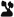
is not the Star. This is also secret: my prophet shall reveal it to the wise.9Nobody really knows where tarot cards originated. Obviously, they could not have existed as cards before the invention of paper. As a matter of fact, we cannot with any degree of certainty trace them any further back than northern Italy in the first half of the fifteenth century, where they were called carte da trionfi (cards of the triumph) and used to play a game similar to modern bridge. Later, in the 1530s, the cards became known as tarocchi (singular form tarocco, meaning “tarot”).
Early examples displayed imagery that inspired the imaginations of the Renaissance elite—ancient gods, heroes, virtues, vices, and principals enthroned in chariots and “trumping” one another by order of importance as part of a great triumphal procession. These were later supplemented with other figures, including mystical images from the prophetic books of the Old and New Testaments. Still later, Masonic concepts like the four public and private virtues of Temperance, Fortitude (Strength), Justice, and Prudence (Lovers?) all make their appearance in tarot decks.
THE ORDERING OF THE TRUMPS
For the most part, the individual trump cards of the Thoth Tarot should be immediately recognizable to anyone who is familiar with the traditional images of tarot. The Aeon is the most striking exception.
In the Thoth Tarot, the twenty-two trumps are formally referred to as “Atus of Tahuti.” According to Crowley, “Atu” was Ancient Egyptian for “house” or “key”; Tahuti is the God Thoth (the Egyptian Hermes, or Mercury). He also informs us that the word “atout” is short for the French phrase, bon á tout, meaning “good for anything,” or what card players call a “wild card.”
The earliest decks did not have tides printed on the trumps themselves, and the number of trumps and their ordering differed. As early as the 1490s, however, a basic collection of twenty-two characters and images, ordered more or less as we find them in modern decks, appeared as the standard model throughout Europe.
There is no real evidence that this standardization was the result of anything more occult or mysterious than the natural congealing of the conventions of a popular game. Nevertheless, that phenomenon in itself may have profound implications concerning how the human mind is hardwired to respond to archetypal images.
In a time when artificial images were limited to rare paintings, statuary, and architecture, the introduction of a portable pack of colorful images that could be viewed and enjoyed at one's leisure for hours on end must have had as much impact upon the psyche of fifteenth-century Europe as photography and motion pictures had upon that of the nineteenth and twentieth centuries.
With one exception, the Atus, or trumps, of the Thoth Tarot conform to the Tarot de Marsielles sequence, which is the same as that originally established by the deck of Catelin Geoffroy in 1557.10 The Thoth Tarot also follows, with one exception, the Golden Dawn's secret scheme of attributing certain Hebrew letters and their corresponding elemental, planetary, or zodiacal attributions. That one exception has been, and continues to be, the source of much discussion and argument among students of modern occultism. In the next few pages, I will do my best to explain why the Thoth Tarot attributes the Hebrew letter Tzaddi () to the fourth trump, the Emperor, and the Hebrew letter Hé (
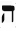
) to the seventeenth trump, the Star instead of the other way around. It is all because of one sentence of one verse of The Book of the Law: “All these old letters of my Book are aright; but is not the Star.”11Don't feel badly if, at first, you find what follows difficult to understand. Lady Harris was quite frank with Crowley about her confusion.
Also I don't feel you have made it clear about Tzaddi—The Emperor. Can't you have a diagram? I have been reading your book to Ann Christie in the evenings & altho she is very interested she could not understand your book and I am not sure I did in the end. It will be a point about which there will be the most argument. Is there any reason for the 2 loops except secrecy? Sure! & if not why not undo the loop & is the Emperor to be numbered 17 or IV or 4 or 17 ditto Star also Strength XI and Justice VIII. I expect I have still got it all wrong but if I have, you must be clearer because I am only just below sub-normal intelligence. A bientot.12
I wish we had Crowley's response to the above letter. It might have been something like his commentary on this verse later published in The Law Is for All:
I see no harm in revealing the mystery of Tzaddi to “the wise”; others will hardly understand my explanations. Tzaddi is the letter of the Emperor, the Trump IV, and Hé is the Star, the Trump XVII. Aquarius and Aries are therefore counterchanged, revolving on the pivot of Pisces, just as in the Trumps VIII and XI, Leo and Libra, do about Virgo. This last revelation makes our Tarot attributions sublimely, perfectly, flawlessly symmetrical.13
Without illustrations, this explanation is rather hard to picture. The Book of Thoth contains diagrams and tables that do not always agree with each other. What follows is my best attempt to sort things out.
The adepts of the Golden Dawn, (working from existing and or innovated esoteric doctrine) assigned Hebrew letters to each of the trumps. Among many other things, these twenty-two Hebrew letters also represent the three primitive elements, seven planets, and twelve signs of the zodiac.
TABLE 6. THE TRADITIONAL SEQUENCE USING THE TITLES OF THE THOTH TAROT AND GOLDEN DAWN ATTRIBUTES
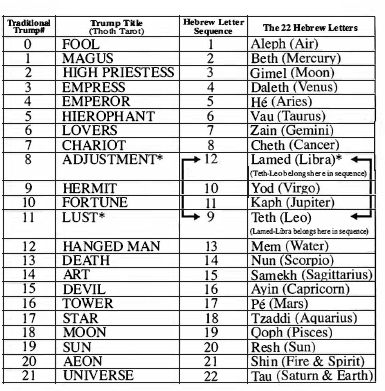
With only two exceptions (as indicated in table 6 by the double arrows), the order of the twenty-two trumps neatly follows the sequential order of the twenty-two letters of the Hebrew alphabet. The exceptions to this otherwise tidy arrangement relate to the traditional positioning of two trumps, 8 (Adjustment, Justice in older decks) and 11 (Lust, Strength in older decks). If we were to follow the natural order of the Hebrew alphabet, Adjustment would be assigned the ninth letter, Teth (which represents the zodiacal sign of Leo), and Lust would be assigned the twelth Hebrew letter, Lamed (which represents the zodiacal sign of Libra). This is not the case, and the adepts of the Golden Dawn made the correction.
This is easier to see in table 7, which shows only the zodiacal trumps. Notice how, by making Strength (Lust) trump number 8 and assigning it the Hebrew letter Teth, and by making Justice (Adjustment) trump number 11 and assigning it the Hebrew letter Lamed, the Golden Dawn arrangement restores the natural order to the signs of the zodiac and to the Hebrew alphabet.
As tidy and logical as this switch is, it nevertheless disturbs the traditional sequence of trumps, and this bothered many Golden Dawn members, including Crowley. The Thoth Tarot follows the Golden Dawn model in that it assigns Teth/Leo to the Lust card and Lamed/Libra to the Adjustment card, but it retains the traditional sequence of Lust as the eleventh and Adjustment as the eighth trump.
TABLE 7. GOLDEN DAWN ARRANGEMENT: THE NATURAL SEQUENCE OF THE SIGNS OF THE ZODIAC AND THE HEBREW ALPHABET RESTORED
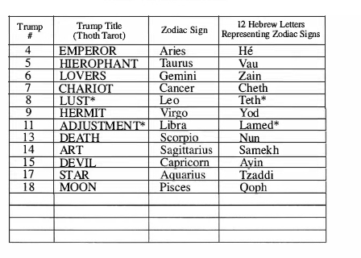
If we were to project this change upon the belt of the zodiac, it would be as if a twist or loop is formed around the sign of Virgo, changing the natural order of signs from Leo-Virgo-Libra to Libra-Virgo-Leo.
Figure 23 shows the natural order of the signs of the zodiac; figure 24 shows the Leo/Libra twist.
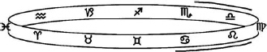
FIGURE 23. NATURAL ORDER OF THE ZODIACAL BELT.
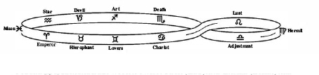
FIGURE 24. ZODIACAL BELT WITH A TWIST. TETH (LEO) AND LAMED (LIBRA) ARE SWITCHED. NOTE THAT VIRGO RETAINS ITS POSITION.
This arrangement leaves us with a curious and somewhat imbalanced diagram of the zodiacal belt, but it didn't seem to bother Crowley, at least not until shortly after twelve noon on April 8, 1904. He was in the middle of receiving the first chapter of The Book of the Law in his hotel room in Cairo. Aiwass, speaking for the Goddess Nuit, had just dictated the words, “Invoke me under my stars! Love is the law, love under will. Nor let the fools mistake love; for there are love and love. There is the dove, and there is the serpent. Choose ye well. He, my prophet, hath chosen, knowing the law of the fortress, and the great mystery of the House of God.”14
When Crowley “heard” the reference to “the fortress” and “the House of God” (alternate titles to trump XVI, the Tower), a question arose in his mind concerning the general correctness of the ordering of the tarot trumps. Instantly, his question was answered, when Aiwass dictated the next line: “Al these old letters of my Book are aright but is not the Star. This is also secret: my prophet shall reveal it to the wise.”15
This comment puzzled Crowley. If Tzaddi was not the Star, then what card was? And what Hebrew letter should be attributed to the Star card? The answer was some time in coming, but when it did come, there was no doubt in Crowley's mind that he had figured it out. Tzaddi was the Emperor.
This card is attributed to the letter Tzaddi, and it refers to the sign of Aries in the Zodiac. This sign is ruled by Mars, and therein the Sun is exalted. The sign is thus a combination of energy in its most material form with the idea of authority. The sign TZ or TS implies this in the original, ono-matopoetic form of language. It is derived from Sanskrit roots meaning Head and Age, and is found to-day in words like Cæsar, Tsar, Sirdar, Senate, Senior, Signor, Señor, Seigneur. 16
The Emperor's old letter was Hé. It would now be attributed to the Star. Hé is the letter for both female components of YHVH (the Supernal Mother Hé of Binah, and unredeemed Daughter Hé of Malkuth) and a perfect representation of the Star Goddess depicted on Atu XVII. Why hadn't someone thought of this before?
Of course, Crowley was not satisfied with just knowing what the switch was; he had to find a more esoteric and technical reason why Tzaddi was not the Star.
As we see in table 8 and figure 25, switching the trumps that represent the Hebrew Letters Hé and Tzaddi upsets the natural order of the signs of the zodiac on the opposite side of the zodiac, as if another loop had formed on the belt of the zodiac that twisted around the sign of Pisces and changed the natural order from Aquarius-Pisces-Aries to Aries-Pisces-Aquarius.
TABLE 8. CROWLEY ARRANGEMENT: THE NATURAL SEQUENCE OF SIGNS ARRANGED TO ACCOMMODATE THE NEW ORDER
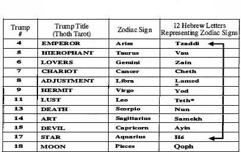
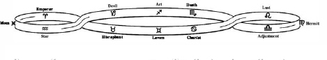
FIGURE 25. ZODIACAL BELT WITH TWO TWISTS.TETH (LEO) AND LAMED (LIBRA) ARE SWITCHED BY THE GOLDEN DAWN; EMPEROR (TZADDI) AND STAR (HÉ) ARE SWITCHED BY CROWLEY.
It is likely that there will always be confusion and controversy over this matter. It doesn't help that Crowley offers us conflicting diagrams and statements in The Book of Thoth. The most vexing are:
- Table XX, which assigns Aquarius to the Emperor and Aries to the Star;
- The last paragraph of his comments on the Emperor (page 78), where he talks of the path of the Emperor as if it held its old position on the Tree of Life, joining sephira 2, Chokmah, with sephira 6, Tiphareth.
Whether this is because of inevitable typographical errors or because of Crowley's reticence to form a strict doctrine around any particular verse of The Book of the Law, will probably remain a mystery, but here's a quick reference that I would loved to have had at the beginning of my study of the Thoth Tarot. It may not conform to every statement and diagram in The Book of Thoth, but it is the most consistent summary I could create.
Trump 4 is the Emperor
- The zodiac sign assigned to the Emperor is Aries;
- The Hebrew letter for the Emperor is Tzaddi (and everything Tzaddi represents);
- On the Tree of Life, the Emperor is found on path 28, which joins the seventh sephira, Netzach, to the ninth sephira, Yesod.
Trump 8 is Adjustment
- The zodiac sign assigned to Adjustment is Libra;
- The Hebrew letter for Adjustment is
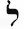
Lamed (and everything Lamed represents); - On the Tree of Life, Adjustment is found on path 22, which joins the fifth sephira, Geburah, to the sixth sephira, Tiphareth.
Trump 11 is Lust
- The zodiac sign assigned to Lust is Leo;
- The Hebrew letter for Lust is
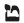
Teth (and everything Teth represents); - On the Tree of Life, Lust is found on path 19, which joins the fourth sephira, Chesed, to the fifth sephira, Geburah.
Trump 17 is the Star
- The zodiac sign assigned to the Star is Aquarius;
- The Hebrew letter for The Star is
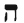
Hé (and everything Hé represents); - On the Tree of Life, Hé is found on path 15, which joins the second sephira, Chokmah to the sixth sephira, Tiphareth.
THE DIVISION OF THE TRUMPS
There are near infinite ways the twenty-two trumps can be divided and combined for meditative and instructive purposes. The most obvious, of course, are the divisions by three elemental, seven planetary, and twelve zodiacal cards. Another very popular method of division places the Fool at the top of three rows of seven cards, ordered consecutively. Each of the three rows can represent some aspect or quality of character or consciousness. The cards are then considered as seven columns of three cards, each relating in some way to each other. For example, the first column would have the Magus at the top, Adjustment in the middle and the Devil on the bottom, perhaps suggestive of some cosmic truth relating to the manifest nature of the Magus, or some such spiritual lesson. Personally, I believe that any way we organize or combine the cards is a legitimate meditative exercise. After all, the trumps are a universal alphabet of images and, no matter how we throw them together, they are bound to spell something.
Buried in The Book of Thoth, as the last paragraph of his comments on the High Priestess, Crowley reveals a most remarkable secret concerning the fundamental nature of the twenty-two trumps:
It is especially to be observed that the three consecutive letters, Gimel, Daleth, Hé (Atu II, III, XVII) show the Feminine Symbol (Yin) in three forms composing a Triune Goddess. This Trinity is immediately followed by the three corresponding and complementary Fathers, Vau, Tzaddi, Yod (Atu IV, V, IX). The Trumps 0 and I are hermaphrodite. The remaining fourteen Trumps represent these Primordial Quintessences of Being in conjunction, function, or manifestation.17
If the above leaves you somewhat unexcited let me get out my Crowlese-English dictionary and attempt to translate.
Eight trumps (the Fool, the Magus, the High Priestess, the Empress, the Emperor, the Hierophant, the Hermit, and the Star) are a special class of trump. They are primordial quintessences of being. (Just for fun, let's call these eight first-class trumps.)
These first-class trumps are divided by gender into three categories:
- The Fool and the Magus are hermaphrodite;
- The High Priestess, the Empress, and the Star show the feminine symbol in three forms;
- The Emperor, the Hierophant, and the Hermit show the masculine symbol in three forms. These three correspond and are complementary to the High Priestess, the Empress, and the Star (though Crowley is not clear how they are paired).
Each of the remaining fourteen trumps (let's call them second-class trumps) represents one or more of the first-class trumps, and they do so in one of three ways:
- As an expression of the character and behavior of the first-class trump when it is combined with one or more of its seven fellows;
- As an expression of how the first-class trump functions;
- As an expression of how the first-class trump manifests.
Crowley doesn't give us any examples and leaves us to our own devices as to how to apply this doctrine, but just a few minutes with the cards can provide much food for thought. For example (and the most obvious), the second-class trump the Lovers can be studied as the expression of the character and behavior of first-class trump the Empress when combined with first-class trump the Emperor (or for that matter with the High Priestess and the Hermit).
This exercise, and many more you are likely to discover in your tarot career, will naturally become more effective (and more fun) as you become more familiar with the cards. In my opinion, the most important thing to keep in mind is that none of the trumps (indeed, no single tarot card) stands alone. They are all intimately interconnected. The Major Arcana is one master play with twenty-two modular acts that can be performed in an infinite numbers of ways.
That being said, I think it's time we bring up the curtain and take a look at our cast of characters. Before we do, however, I would like to remind you that the tarot tells a story, and like a play or a movie, it is best to see it first from beginning to end to appreciate its message. Once you are familiar with the actors and plot, you can skip around to examine your favorite scenes and characters more closely. I therefore strongly suggest that the first time you read the following sections concerning the individual cards, you do so straight through and in the order they are presented.
The tarot's story is your story. Savor it. When you are finished reading it—you will be someone else.